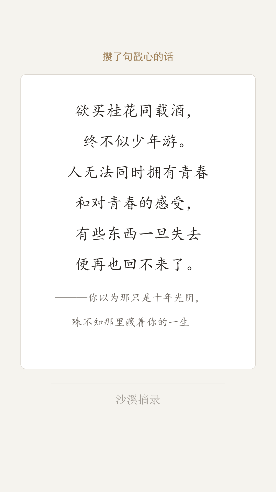
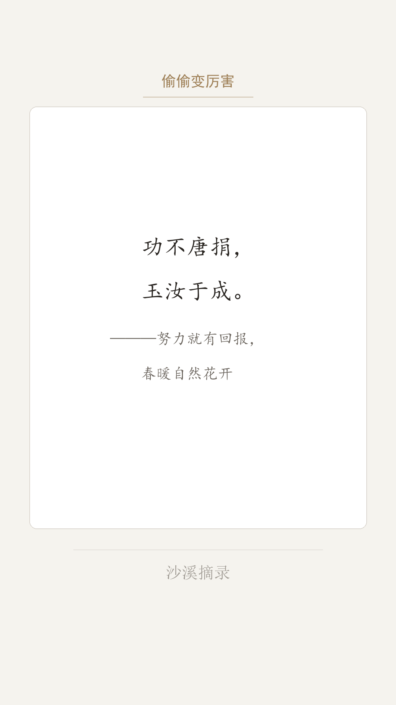
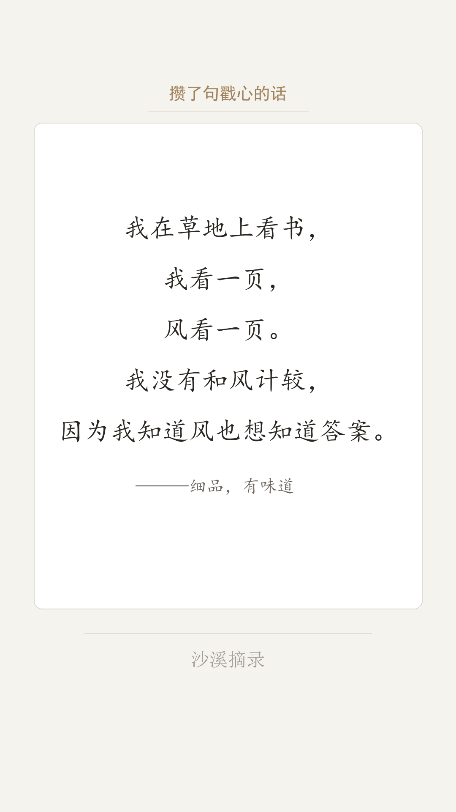
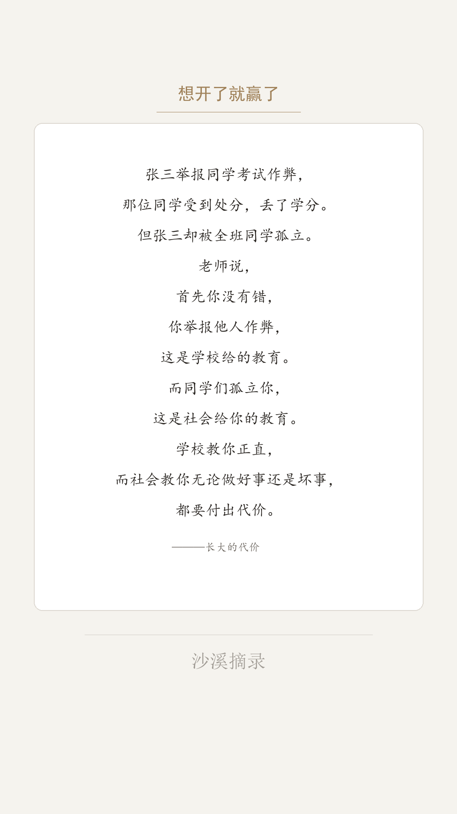
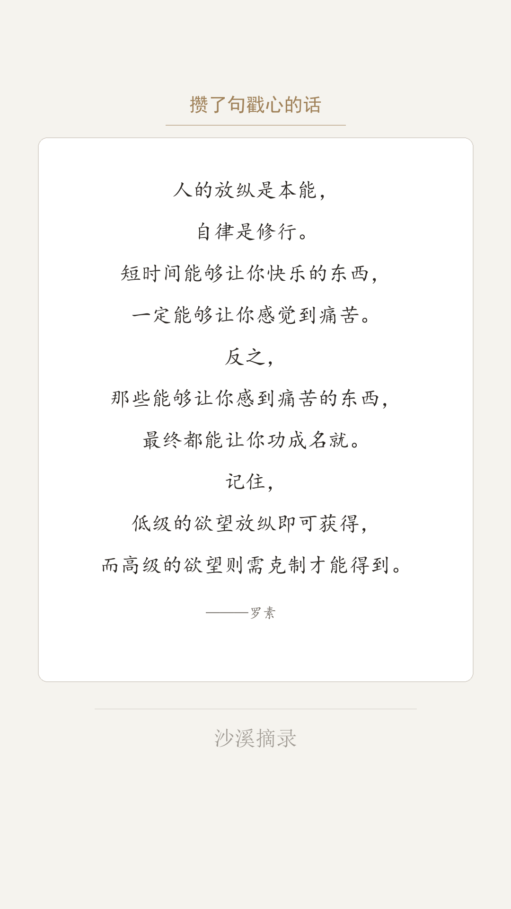
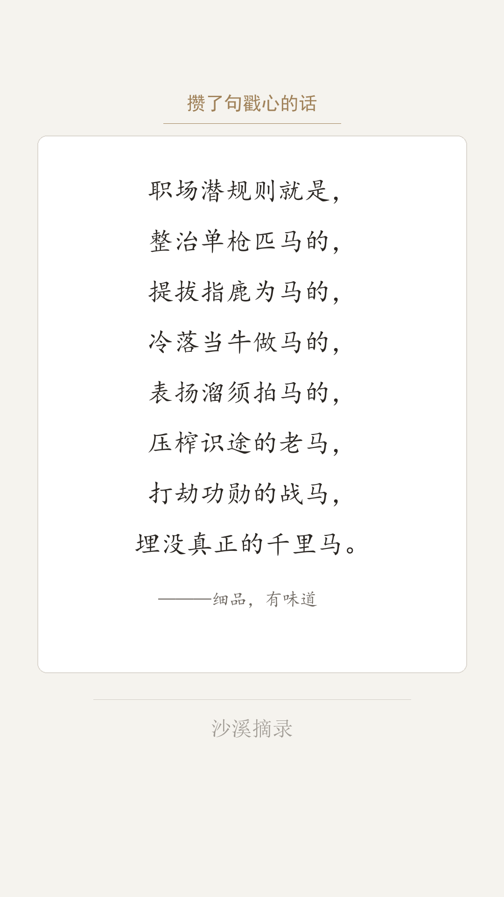

我做了一个抖音文摘账号，叫「沙溪摘录」。
想法很简单：把那些散落在各处的好句子、好段落，做成干净好看的图片卡片，每天发一条。既是给自己留个念想，也希望能给看到的人一点触动。
规划好内容方向后，我碰到了第一个现实问题——
我手里攒了一百多条摘录，如果每张卡片都手动设计排版，少说要花几十个小时。我既不会设计，也没学过 Python，更没有专业工具。
但我有 AI，还有一点不愿认输的心。
于是我决定：让 AI 来帮我做这件事。
决定用 AI 做这件事之后，我首先面临的问题是：用哪个？
这个问题比我想象的要麻烦得多。
我陆续试过好几款 AI 工具：有的只能聊天、没法帮我跑代码；有的能写代码，但每次对话结束就忘了上下文，下一次聊像从头开始；有的响应很慢，有的界面很难用。更重要的是——我需要一个能真正操作本地文件、执行脚本、帮我跑起来的助手，而不是一个只给我粘一段代码、让我自己去研究怎么跑的工具。
选 AI 工具这件事，我的建议是：不要只看它能不能"说"，要看它能不能"做"。
对我这个没有技术背景的普通用户来说，AI 能不能直接帮我跑起来、能不能记住项目进展、能不能跟着我一起调试——这才是最关键的。
我完全不懂 Python，也没有编程经验。但我知道自己想要什么——
就这样，一来一回之间，一段我完全看不懂的 Python 脚本出现了。
我按照 AI 的指引，在本地跑起来——第一张卡片生成了。虽然排版还有很多问题，但那一刻真的有一种奇妙的感觉：我什么代码都没写，但我的想法变成了一张真实的图片。
经过反复打磨，最终的卡片是这个样子的。每张卡片都是 1080×1920 竖版，纯 Python 代码生成，没有任何手工设计：






Python + Pillow（图片生成） · 楷体/黑体/宋体中文字体渲染 · 自动字号缩放（62→56→50→44px） · 1080×1920 竖版（抖音标准）· 每张图附配套解读 TXT 文档
我要诚实地说——这个过程并不顺利。每往前走一步，就会冒出新的问题。
但这些问题，反而是整段经历里最有价值的部分。
/ 手动标记换行位置。
每一次遇到问题，我都没有选择放弃或绕过。
我会仔细描述"哪里不对、我想要什么效果"，然后和 AI 一起找根因、验方案。
这个过程本身，就是学习。
经过反复打磨，我们建立了一套可复用、可持续运转的工作流。这套流程在项目里有一个文件记录着：要求.txt，版本已经到了 v4.2。
/ 标记）、改写结尾语，直到满意为止。gen_from_preview.py，严格按照我修改后的预览文件生成卡片，不做任何额外改动。这套流程有一个核心设计理念：人负责审美和内容，AI 负责渲染和批量输出。
我不需要懂代码，但我需要清楚地知道自己想要什么，并且能把它说清楚。
每张图片，都有一个同名的 TXT 文件。
一开始，这 124 个文档让我很失望——AI 对每一条都套了同一套三段式模板，换汤不换药。我直接说了：
AI 重写了整个生成脚本，为 124 条内容逐条手写解读。这一次，每条内容根据自身特点选择不同的解读角度：
· 「欲买桂花同载酒」→ 【延伸解读】人与时间的永恒错位 + 【情感共鸣】此刻你手里握着的才是最珍贵的 + 【反向思考】回不去，也未必是坏事
· 「职场潜规则马字诀」→ 【延伸解读】七个马字背后的权力逻辑（一段深度解析）
· 「张三举报作弊被孤立」→ 【延伸解读】学校教育 vs 社会教育的两套规则
这些文档，是每天发布时最好用的文案素材。
做完这个项目，我反复想一个问题：在整个过程中，AI 做了什么？我又做了什么？
AI 做了这些：写代码、调参数、修 bug、生成内容、批量处理。
我做了这些：提出想法、描述问题、定义标准、审核结果、坚持打磨。
我没有因为"看不懂代码"就止步——因为我不需要看懂代码，我只需要能清晰描述自己想要什么，以及什么地方还不够好。
这才是普通人用 AI 最核心的能力：把模糊的想法变成清晰的描述。
每一次问题的出现，都是一次更深理解的机会。孤立标点行是怎么来的？为什么生成的结尾不是我改的那个版本？为什么 124 个解读文档都一个模样？
我每次都把问题搞清楚，而不是绕过去。这个习惯，让整个项目最终沉淀出一套真正可用的工作流，而不是一堆临时凑合的代码。
我不是技术人员。我用 AI 做这件事，不是因为我懂技术，而是因为我愿意持续去问、去试、去改。
如果你也有类似的想法，这里有几条我觉得真正有用的建议：
普通人和 AI 之间，
没有技术门槛，
只有是否愿意持续探索的意志。
——「沙溪摘录」 · 沙溪
本文记录了从零开始用 AI 构建自动化图文生成工作流的完整历程。
如果对你有帮助，欢迎点赞或在评论区分享你的实践。